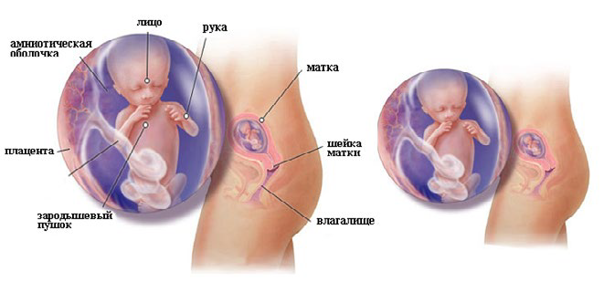

13 неделя беременности
13 неделя беременности свидетельствует о том, что первый и наиболее сложный для большинства женщин триместр завершился. Но большую радость мамочке может доставить УЗИ, где можно наблюдать за поведением малыша, особенно если удастся запечатлеть снимок с его изображением.
Длина малыша: 7,4 см.
Вес малыша: 18 г.
Второй триместр – это самое приятное из всей беременности время, поскольку нет токсикоза. Поэтому, самое время насладиться своей беременностью. К тому же, многие семейные пары пришли к выводу, что во втором триместре наблюдается повышенное сексуальное влечение к партнеру, что тоже не может не доставить удовольствия.
Тринадцатая неделя беременности свидетельствуето том, что первый и наиболее сложный для большинства женщин триместр завершился. Но большую радость мамочке может доставить УЗИ, где можно наблюдать за поведением малыша, особенно если удастся запечатлеть снимок с его изображением.
У малыша уже сформировано 20 молочных зубов, которые прорежутся только ближе к 8 месяцу жизни малыша вне маминого животика. Также появились уже первые волосы. А на крошечных пальчиках уже имеются отпечатки.
Тельце ребенка постепенно вытягивается, и теперь голова не кажется такой большой. Если позволяет длина ручек, вскоре он начнет сосать пальчик. Размер малыша становится больше, и она постепенно обретает более четкие очертания – подбородок и носик. Кроме того, начинается закладывание ткани, отвечающей за формирование косточек, и даже намечаются ребрышки, правда всего лишь пара.
Кишечник крохи располагается в брюшной полости, в нем образуются ворсинки, которые будут принимать активное участие в переваривании пищи. Поджелудочная железа уже способна вырабатывать гормон инсулин.
Даже легкие уже тренируются дышать (пока только околоплодной жидкостью).
Легкие начнут дышать воздухом только после рождения. Моча, которую ваш малыш выделяет в околоплодную жидкость, не причиняет ему никакого вреда и быстро выводится через пуповину.
Начиная с 13 недели, внутриутробное развитие мальчиков и девочек обретает свои индивидуальные особенности. Так, у малышей мужского пола начинает вырабатываться простата – предстательная железа, а у девочек – в яичниках уже имеется более 2 млн.яйцеклеток. Но что самое удивительное, так это то, что малыш уже умеет улыбаться, реагируя, таким образом, на мамину ласку и голос.
ВАШ ОРГАНИЗМ
С началом 13 недели вас можно поздравить, поскольку треть этого непростого пути уже миновала. Постепенно проходит раздражительность, а вместе с ней и боязнь за жизнь ребенка, связанная с самопроизвольным абортом, т.е. выкидышем.
До предстоящих родов еще более 5 месяцев, но в груди уже возможно начинает вырабатываться молозиво – питательная жидкость, являющаяся основной пищей для новорожденного малыша пока у мамочки не придет молоко.
Теперь прибавка в весе женщины стала заметной, поскольку если раньше тошнота вызывала полное отвращение к пище, то теперь аппетит мамочки, за счет стремительного роста ребенка, весьма увеличился, соответственно, живот на 13 неделе беременности начет расти быстрыми темпами.
Ощущения на 13 неделе беременности весьма противоречивы. С одной стороны, все налаживается, но именно сейчас может проявиться довольно распространенное у беременных женщин заболевание – кандидоз (молочница).
Причиной появления молочницы являются грибы вида candida. В пассивном состоянии они живут в организме каждого человека. Но при сбоях иммунитета и стрессах (к которым так предрасположены беременные женщины) начинают активизироваться и размножаться, вытесняя нормальную микрофлору. Молочница является причиной резкого зуда и творожистых выделений белого цвета, которые вызывают массу неприятных ощущений.
Но спешить заниматься самолечением не стоит, лучше воспользоваться советом врача, который подскажет, какие лекарственные препараты выбрать, чтобы не нанести вреда малышу.
Вы также можете заметить появление растяжек на груди, животе и даже спине. Величина растяжек зависит от эластичности вашей кожи. Возможно, у вас появляются некие боли в животе, что связано с растяжением связок, удерживающих вашу матку на месте.
Внутриутробное развитие плода на 13 неделе беременности
ЗДОРОВЫЕ СОВЕТЫ
Начиная с 13 недели нужно очень осторожно относиться к пищевым продуктам, так как излишние сладости и мучные (сдобные) изделия приведут к лишней прибавке в весе, а это не к чему ни маме, ни ребенку (с пирамидой правильного питания во время беременности можно ознакомиться ЗДЕСЬ).
Можно задуматься о посещении специальных курсов подготовки к родам. Это, кстати, лучше делать совместно с супругом, поскольку полученная там информация сблизит пару, позволит мужчине лучше понять нынешнее состояние женщины, а также обучит правильной дыхательной технике и упражнениям для будущих мам, которые чаще всего выполняются в паре.
Если вы еще не начали носить одежду для беременных, сейчас это, скорее всего, становится необходимостью. Желательно оградить вашего малыша от лишнего сдавливания обычной одеждой.
Сейчас вы, скорее всего, испытываете прилив энергии. Подумайте о совершении прогулок в компании вашего партнера. Прогулки являются хорошим способом оставаться в форме во время беременности, а также дают вам двоим возможность больше общаться.
12 неделя 14 неделя